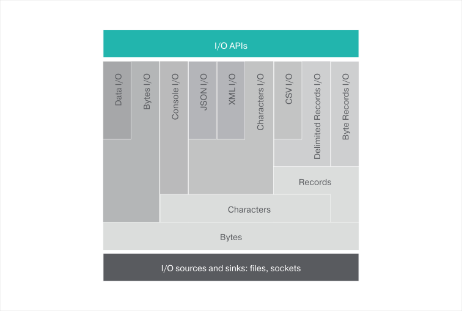

Module: io
ballerina/io:0.5.0
Module Overview
This module is designed to support input and output operations via channels in a canonical way, either in a blocking, or non-blocking manner.

Channels
A channel represents an I/O source or sink of some bytes, characters, or records that are opened for reading or writing respectively.
Byte channels
The most primitive channel is the ByteChannel which reads and writes 8-bit bytes. For an example on the ByteChannel, see the Byte I/O Example.
Character channels
The CharacterChannel is used to read and write characters. The charset encoding is specified when creating the CharacterChannel. For an example on the CharacterChannel, see the Read/Write Files Example.
If a ReadableCharacterChannel points to a JSON or XML source, it can be read and then written directly into a variable of
the respective type. For examples on reading/writing JSON or XML sources, see the JSON I/O Example and XML I/O Example.
Record channels
Also, Ballerina supports I/O for delimited records. For an example on reading the records in a text file, see the Record I/O Example.
A .CSV file can be read and written directly into a CSVChannel as shown in this CSV I/O Example.
Data Channels
Ballerina supports performing data i/o operations.
A Person object could be serialized into a file or a network socket as seen in the Data I/O Example.

Objects
[11]
| ReadableByteChannel |
ReadableByteChannel represents an input resource (i. |
| ReadableCSVChannel |
Represents a ReadableCSVChannel which could be used to read records from CSV file. |
| ReadableCharacterChannel |
Represents a channel, which could be used to read characters through a given ReadableByteChannel. |
| ReadableDataChannel |
Represents a data channel for reading data. |
| ReadableTextRecordChannel |
Represents a channel which will allow to read |
| StringReader |
Represents a reader which will wrap string content as a channel. |
| WritableByteChannel |
WritableByteChannel represents an output resource (i. |
| WritableCSVChannel |
Represents a WritableCSVChannel, which could be used to write records from the CSV file. |
| WritableCharacterChannel |
Represents a channel which could be used to write characters through a given WritableCharacterChannel. |
| WritableDataChannel |
Represents a WritableDataChannel for writing data. |
| WritableTextRecordChannel |
Represents a channel, which will allow to write records through a given WritableCharacterChannel. |
Functions
[9]
| createReadableChannel |
Creates an in-memory channel, which will be a reference stream of bytes. |
| openReadableCsvFile |
Retrieves a readable CSV channel from a given file path. |
| openReadableFile |
Retrieves a |
| openWritableCsvFile |
Retrieves a writable CSV channel from a given file path. |
| openWritableFile |
Retrieves a |
|
Prints |
|
| println |
Prints |
| readln |
Retrieves the input read from the STDIN. |
| sprintf |
Returns a formatted string using the specified format string and arguments. |
Constants
[11]
| DEFAULT |
Default value is the format specified by the CSVChannel. |
| CSV |
Field separator will be "," and the record separator will be a new line. |
| TDF |
Field separator will be a tab and the record separator will be a new line. |
| COMMA |
Comma (,) will be used as the field separator. |
| TAB |
Tab (/t) will be use as the field separator. |
| COLON |
Colon (:) will be use as the field separator. |
| CSV_RECORD_SEPARATOR |
Represents the record separator of the CSV file. |
| FS_COLON |
Represents the colon separator, which should be used to identify colon-separated files. |
| MINIMUM_HEADER_COUNT |
Represents the minimum number of headers, which will be included in the CSV. |
| BIG_ENDIAN |
Specifies the bytes to be in the order of most significant byte first. |
| LITTLE_ENDIAN |
Specifies the byte order to be the least significant byte first. |
Types
[3]
| Error |
Represents IO module related errors. |
| Format |
The format, which will be used to represent the CSV. |
| Separator |
Field separators, which are supported by the |
| ByteOrder |
Represents network byte order. |
Errors
[5]
| AccessDeniedError |
This will get returned due to file permission issues. |
| ConnectionTimedOutError |
This will return when connection timed out happen when try to connect to a remote host. |
| EofError |
This will get returned if read operations are performed on a channel after it closed. |
| FileNotFoundError |
This will get returned if the file is not available in the given file path. |
| GenericError |
Represents generic IO error. |